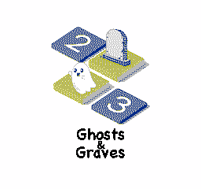
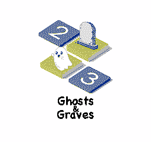

Anthony Bongers
My website for completed and ongoing projects.
LinkedIn GitHubMy website for completed and ongoing projects.
LinkedIn GitHub 

Ghosts And Graves is a 6502 assembly NES demake of the puzzle game Tents And Trees. Complete 25 worlds (700 levels in total) of mind-bending puzzles, including four different game modes!